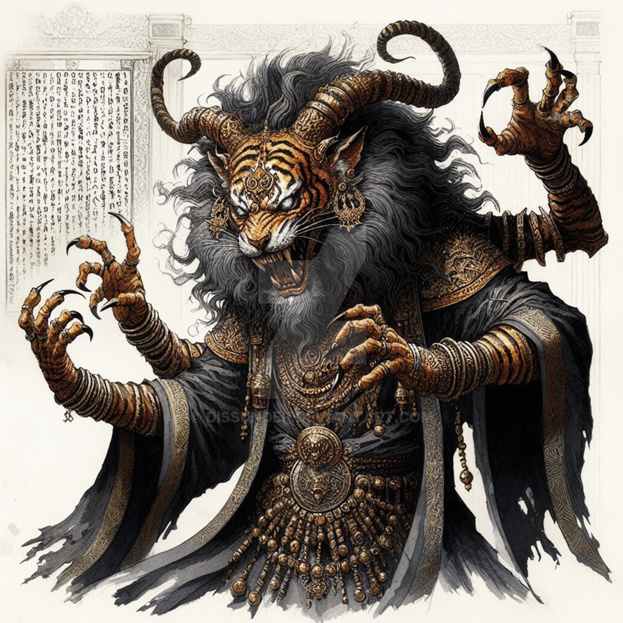
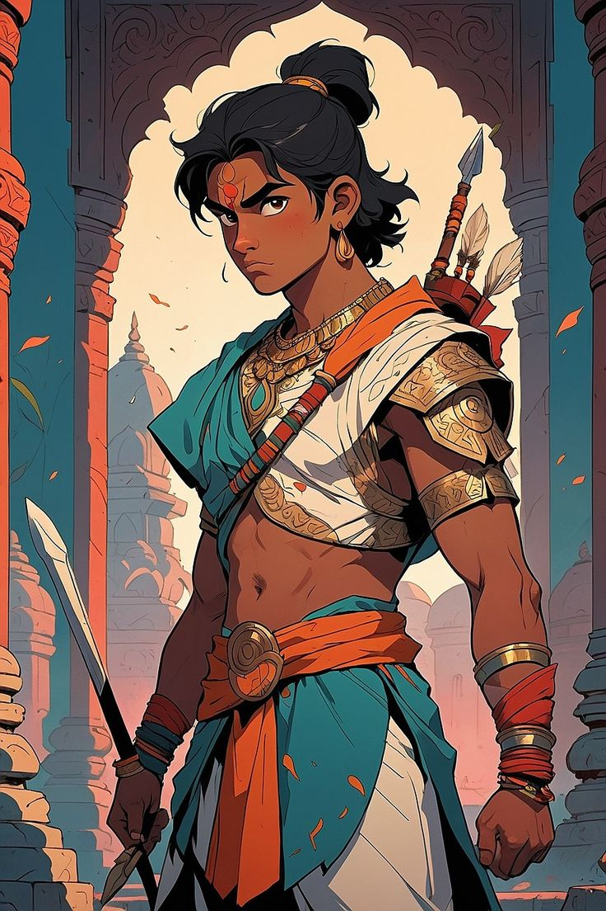
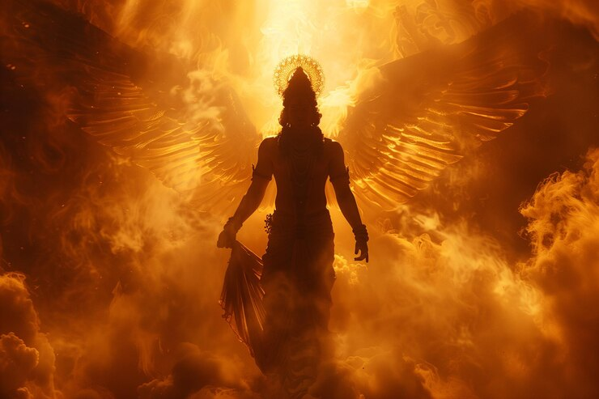
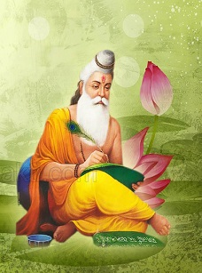
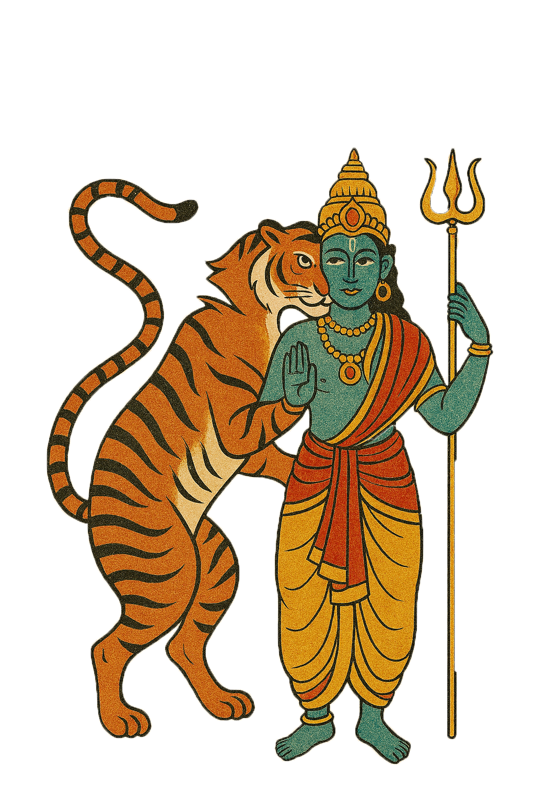
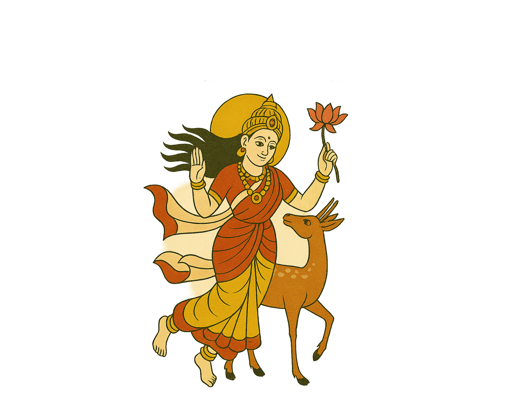

Characters from the Tales

Gorakhnath
The Great Yogi and Mystic
A legendary saint and mystic known for his profound spiritual wisdom and extraordinary powers. Central to many folk tales, he represents enlightenment and divine knowledge.

Matsyendranath
The Fish-Headed Sage
A legendary yogi believed to be the guru of Gorakhnath. Often depicted in stories as a powerful sage with mystical abilities who teaches profound spiritual truths.

The Evil Demon
Antagonist
A powerful dark force that opposes the heroes and challenges their spiritual strength. Represents the darkness that must be overcome through courage and wisdom.

The Young Hero
Seeker of Truth
A brave protagonist who embarks on quests to gain knowledge and power. Often guided by the wisdom of the great mystics, facing trials that test both character and determination.

The Divine Guardian
Protector of the Realm
A celestial being who watches over the people and aids the righteous in their battles. Represents divine justice and protection against evil forces.

The Wise Elder
Keeper of Ancient Knowledge
An aged sage who possesses secrets of the ancient world. Often serves as a mentor figure, sharing spiritual wisdom and guiding heroes through their spiritual journeys.

The Shape-Shifter
Mystical Being of Transformation
A magical entity capable of changing forms, representing the fluid nature of reality and the power of transformation. Often appears as a test or guide for the main characters.

The Celestial Princess
Divine Maiden
A heavenly princess or divine maiden who appears in tales of romance and adventure. Often serves as a prize for the hero or a catalyst for greater adventures.